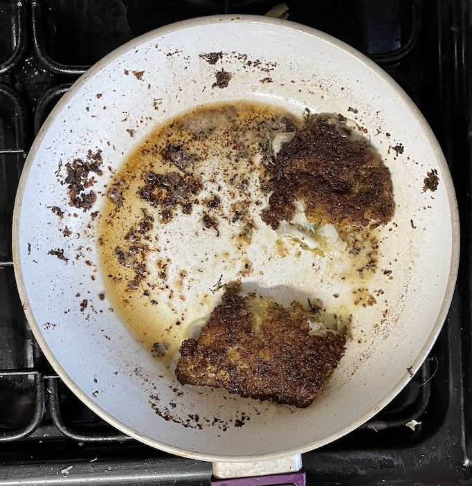

Fish
Salmon
Baked
- Air fry on bake at 160°C for 15 mins skin side up (same for oven)
- Take out and rest for 2 mins
- Remove skin and grey flesh before serving
Poached
- Bring to simmer
- 500ml stock
- dill chopped
- 1 bay leaf
- pepper
- Cook salmon fillets for 5-6 mins (check cooked, might need longer)
- Can keep warm in foil until ready to serve
Notes
Cod
Pan-fried
- Start on low-medium heat
- Heat fillets for 5 mins in oiled frying pan without lifting (flip before cooked through so fish does not
flake or break apart)
- Turn over and add butter
- Baste the fillets in melted butter until cooked
Pan-fried with lime and herb crust
- Press firmly fish on both sides to coat with
- 3 tbsp breadcrumbs
- 2 tbsp dill / parsely chopped
- zest of 1 lime
- Melt 30g butter in pan
- Add 1 tbsp olive oil
- When bubbles appear around pan add fish and cook for 5-6 mins
- When crumbs are golden turn and cook other side
Notes
- hard to overcook cod because is oily fish
Pics

Tuna
Seared
- Plenty of sesame oil in pan
- Fry for up to 2 mins each side making sure not cooked all the way through
- Rest for short time then cut across grain
Serve with
- Udon noodles and broccoli cooked in stock; teriyaki sauce; spring onions
Sea bass
Pan-fried
- Heat fillets for 4 mins in 1½ tsp olive oil skin side down without lifting, press
gently so doesn't curl
- Turn over and fry for another 90 seconds